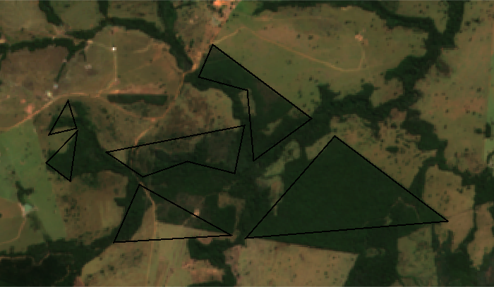
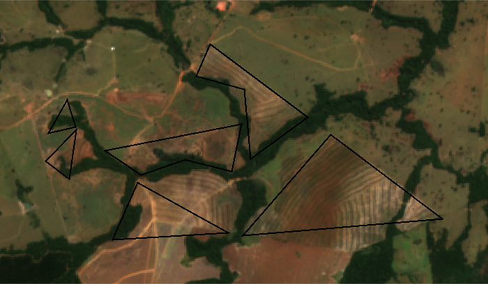
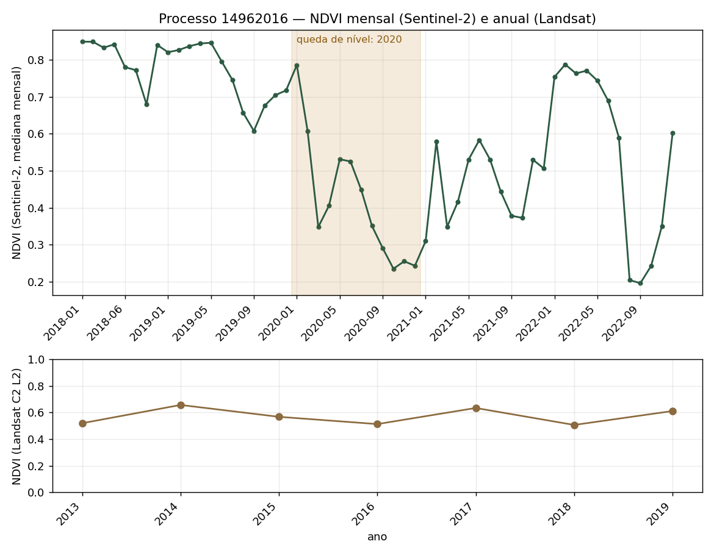

Você mandou os quatro objetivos do seu pré-projeto e pediu uma ferramenta para obter os dados mais rápido. Em 23/10/2026, testei com IA o que dá para automatizar em cada objetivo, com dados públicos reais de Goiás, na região do Meia Ponte.
Aqui está o resultado, objetivo por objetivo, e uma ficha que você pode usar sozinha.
Estágio docência · Victor Amaral · use as setas ← → para trocar de seção
“Eu me inscrevi no processo seletivo de mestrado da CIAMB e gostaria de alguma ferramenta para otimizar a obtenção dos dados propostos no pré projeto, que também podem ser uteis no meu dia a dia no trabalho.”
“Acredito que o principal processo para facilitar seria no item 3, para obter as imagens no Google Earth Engine.”
“Menos tempo na busca das imagens, ou classificação dos dados.”
Dois termos que aparecem daqui em diante: ASV é a autorização de supressão de vegetação (a base pública de autorizações da SEMAD-GO); remanescente é o fragmento de vegetação nativa mapeado pelo Atlas Goiás.
| Objetivo | Situação | Em uma frase |
|---|---|---|
| 1. Cruzar Atlas e autorizações | Parcial | O Atlas não tem o mapa em polígonos para baixar; só dá para consultar ponto a ponto, e a consulta erra. |
| 2. Área e taxa por classe do Atlas | Não feito | Depende do objetivo 1. |
| 3. Suprimiu? Quando? | Funciona | Testado em 30 autorizações; você pode rodar sozinha, sem baixar imagens. |
| 4. Formações mais afetadas | Demonstração | Feito com as classes do MapBiomas; com as do Atlas, depende do objetivo 1. |
Você não precisa procurar nem baixar imagens. O Google Earth Engine (serviço gratuito do Google que processa imagens de satélite na nuvem) faz a conta direto no polígono de cada autorização: 30 autorizações rodam em cerca de 30 segundos. Também não precisa classificar imagens: o MapBiomas (mapa anual de cobertura do solo do Brasil) já traz a classe de cada ano. As imagens de antes e depois só são geradas quando você quer olhar um caso.
Para cruzar, é preciso o mapa dos remanescentes em formato vetorial (polígonos, como um shapefile). Com ele, o cruzamento é uma interseção de polígonos.
| O que testei | Resultado |
|---|---|
| Baixar o mapa em polígonos (serviço WFS, que entrega o arquivo vetorial) | Desligado no servidor do Atlas. Não há shapefile público. |
| Ver o mapa (serviço WMS, que entrega só a imagem do mapa) | Funciona. Ao consultar um ponto, ele devolve a classe, a área e o município do fragmento. |
| Acerto da consulta por ponto | Sorteei 60 pontos e comparei a resposta da consulta com o próprio desenho do mapa do Atlas em alta resolução. Em 14 havia remanescente desenhado; a consulta encontrou 7. |
| Cobertura | O Atlas só mapeou, até agora, as bacias do Meia Ponte e dos Bois. |
Mesmo assim, sorteei 425 pontos dentro de 30 autorizações: cerca de 87% da área autorizada caiu fora dos remanescentes mapeados. O número está inflado pelos dois problemas da tabela (a consulta perde fragmentos, e parte das autorizações fica fora das duas bacias mapeadas). Vale só como ordem de grandeza e não deve ir para a dissertação.
Pedir o shapefile do Atlas à SEMAD ou à equipe que produz o Atlas. Com ele, os objetivos 1, 2 e 4 viram um cruzamento de polígonos e uma tabela, com o mesmo script.
Não fiz o cálculo deste objetivo porque ele precisa saber quanto de cada classe do Atlas existe e quanto foi licenciado, e isso sai do cruzamento do objetivo 1 (seção 3).
Para cada classe do Atlas: a área licenciada dividida pela área de remanescente daquela classe. Com o shapefile, a mesma interseção do objetivo 1 dá as duas áreas.
O script pega o polígono de cada autorização e pede ao Earth Engine, ano a ano, a classe do MapBiomas e o NDVI do Sentinel-2 e do Landsat. Se a vegetação nativa vira outra classe depois da licença, houve supressão; o ano em que muda diz quando. O NDVI é um índice calculado a partir da imagem de satélite: quanto mais vegetação verde, mais alto ele é (vai até 1).


O MapBiomas é anual e diz só que a supressão foi em 2020. A série mensal de NDVI do Sentinel-2 mostra que foi entre janeiro e março: o índice era 0,79 em janeiro de 2020 e caiu para 0,35 em março.

Cuidado com a seca: o NDVI cai em toda estação seca e volta com a chuva. Supressão é a queda que não volta no período chuvoso seguinte. Por isso, para decidir se houve supressão, o método compara médias anuais, e a seca não engana. A série mensal entra depois, para ver quando.
A área usada aqui é uma feição de 112 ha. A base pública tem duas feições para esse processo (seção 8).
Testei o método em 30 autorizações sorteadas na região do Meia Ponte.
Os outros 373 ha autorizados já não eram vegetação nativa no ano anterior à licença, segundo o MapBiomas. Os dados não dizem por quê; vale olhar alguns desses processos.
Comparei o NDVI médio dos dois anos antes da licença com o dos dois anos depois. Nas 25 autorizações com supressão, o NDVI caiu 0,25 em média; nas outras 5, ficou praticamente igual (subiu 0,01).
MapBiomas Coleção 11.
Usei as mesmas 30 autorizações da seção 6 e agrupei pela formação dominante: a classe do MapBiomas com mais área dentro da autorização, no ano anterior à licença.
| Formação | Processos | Nativa antes da licença | Nativa suprimida |
|---|---|---|---|
| Formação Florestal | 17 | 435 ha | 63,8% |
| Formação Savânica | 6 | 298 ha | 59,8% |
| Pastagem | 5 | 40 ha | 28,6% |
| Mosaico de usos | 2 | 6 ha | 73,1% |
Os percentuais são sobre a vegetação nativa que existia antes da licença. As 5 autorizações sem supressão estão na tabela: 3 em Formação Florestal, 1 em Savânica e 1 em Pastagem.
Pastagem aparece porque a autorização pode cobrir uma área que era, na maior parte, pastagem, com um pedaço de vegetação nativa. Nessas 5, eram 40 ha nativos no total; em Mosaico de usos, 6 ha. Com bases tão pequenas, esses percentuais variam muito.
É uma demonstração. Em outro sorteio de 30 processos, Florestal e Savânica trocaram de posição, então 30 processos não bastam para comparar formações. E a classificação aqui é do MapBiomas: com as classes do Atlas, é preciso o shapefile (seção 3).
MapBiomas Coleção 11.
O script ficha_asv_code_editor.js roda no Code Editor do Earth Engine (o editor do Earth Engine no navegador). Não precisa instalar nada nem saber programar: você desenha a área da autorização, informa o ano da licença e clica em Run. O script está no anexo, com botão para copiar.
ANO_LICENCA e desenhe o polígono da autorização no mapa.| O que aparece | Para que serve |
|---|---|
| Vegetação nativa no ano anterior à licença (ha) | Ponto de partida do objetivo 3 |
| Hectares suprimidos a partir da licença, por ano | Responde “suprimiu?” e “em que ano?” |
| Gráfico do NDVI mês a mês | Mostra em que meses foi a supressão |
| Imagens da seca antes e depois, e o mapa do ano da supressão | Conferência visual e figura para o trabalho |
Testei a ficha no processo 14962016 (seção 5). Ela aponta 72,8 ha suprimidos em 2020 (a análise completa deu 71,4 ha) e o NDVI caindo de 0,83 em janeiro para 0,44 em março de 2020. Os valores de NDVI diferem um pouco dos da seção 5 (0,79 e 0,35) porque a ficha usa a mediana dos pixels de 10 m, só com imagens de menos de 60% de nuvem, e a análise completa usa a média dos pixels de 30 m. A queda e o período são os mesmos.
A base pública traz duas feições para esse processo, que somam 242 ha; as análises usaram uma delas, de 112 ha. Antes de usar um processo, confira qual é a área autorizada.
| Decisão | Por que importa |
|---|---|
| Versão do MapBiomas | Nos mesmos 30 polígonos, a Coleção 10 dá 53,5% de supressão e a Coleção 11 dá 60,5%. Cada coleção nova reclassifica também os anos antigos. Escolha uma e cite qual. |
| Ano de referência da vegetação | Medir a vegetação nativa no ano anterior à licença. No próprio ano da licença, parte da supressão já pode ter acontecido. |
| Amostra | 30 processos sorteados não bastam para comparar formações. Estratificar por classe e tamanho, ou usar todas as autorizações da bacia. |
| Qual área usar | A base pública traz área requerida, área autorizada e vegetação existente; são coisas diferentes (campo feicao da base). Defina qual entra na conta. |
| Período | O MapBiomas vai até 2025. Licenças de 2025 e 2026 ainda não têm o “depois”. |
| Áreas pequenas | Muitas autorizações têm poucos hectares. O MapBiomas tem pixel de 30 m, e nas áreas pequenas os pixels da borda, meio dentro e meio fora, pesam muito. Saídas: somar as áreas por processo, ou medir a supressão com o Sentinel-2, que tem pixel de 10 m. |
| Atlas ou MapBiomas | São mapeamentos diferentes, com classes e resultados diferentes. Compare os dois antes de usar um no lugar do outro. |
A base pública de autorizações repete a mesma área uma vez por atividade do processo. Sem tirar as repetições, a área total sobe 7%.
Usei o opencode, um programa em que um modelo de IA lê e escreve arquivos e roda programas no computador. Os modelos foram o DeepSeek V4.1 Flash e, depois, o MiniMax M3.1 Flash.
Fiz cinco pedidos em linguagem comum: o seu pedido com os objetivos; “revise e procure erros”; “por que a Coleção 10?”; “troque de modelo e confira se atende ao que a aluna pediu”; e “registre tudo”. A IA encontrou a base de autorizações no SIGA (sistema da SEMAD-GO), o MapBiomas no Earth Engine e o serviço do Atlas, escreveu os scripts e rodou tudo.
| Erro que a IA cometeu | Efeito | O que teria pegado |
|---|---|---|
| Nome errado de uma coluna na tabela de saída | Tabela inteira com zeros, sem mensagem de erro | Conferir um valor à mão |
| Simplificou o contorno das áreas com uma tolerância em graus, achando que era em metros | A área de um polígono caiu de 192 para 92 ha | Comparar a área com outra ferramenta, como o QGIS |
| Mediu a vegetação no ano da licença | Apareceu mais vegetação suprimida do que existia | Checar se alguma taxa passa de 100% |
| Não tirou as áreas repetidas da base pública | 7% a mais de área | Contar quantas áreas diferentes existem |
| A média de NDVI do “antes” incluía o ano da supressão | A supressão parecia acontecer no mesmo ano da licença | Olhar um caso no gráfico |
| Usou a Coleção 10 do MapBiomas sem motivo | Taxa de supressão 7 pontos percentuais menor | Perguntar “por que essa versão?” (fui eu que perguntei) |
Peça o código à IA, mas confira os números. Em todos esses erros, a tabela saiu com aparência de certa.
Copie todo o código e cole no Code Editor.
{{FICHA}}
| Script | O que faz |
|---|---|
baixa_asv.py | Baixa as autorizações do serviço público do SIGA/GO para uma região |
analisa_asv.py | Para cada autorização: vegetação nativa antes da licença, ano da supressão (MapBiomas) e NDVI anual |
serie_mensal.py | Série mensal (Sentinel-2) e anual (Landsat), imagens de antes e depois e o gráfico |
atlas_cruzamento.py | Estima a classe do Atlas sorteando pontos |
resumo_resultados.py | Tabelas por formação e por ano |
pip install earthengine-api geopandas shapely requests pandas pillow earthengine authenticate python baixa_asv.py --bbox "-50.6,-18.3,-48.4,-16.0" --saida ..\dados\asv_meiaponte.geojson python analisa_asv.py ..\dados\asv_meiaponte.geojson --min-area 5 --max 30 --projeto SEU_PROJETO python serie_mensal.py --geojson ..\dados\asv_meiaponte.geojson --id 607 --de 2018 --ate 2022 --fig ..\dados\serie_607.png
Parâmetros: --bbox é o retângulo da região (longitudes e latitudes); --min-area 5 ignora áreas com menos de 5 ha; --max 30 analisa no máximo 30 autorizações; --projeto é o nome do seu projeto do Google Cloud; --id 607 é o número interno, na base baixada, da feição de 112 ha do processo 14962016.
Fontes: SIGA/SEMAD-GO (camada vw_asv_ipe_sga_publico), WMS do Atlas Goiás (atlas_remanescentes), MapBiomas Coleção 11, Sentinel-2 SR Harmonized e Landsat Coleção 2 no Google Earth Engine.
| Turno | Pedido | Modelo | Resultado |
|---|---|---|---|
| 1 | Contexto da aluna e “respostas concretas e testadas” | DeepSeek V4.1 Flash | Fontes, download das autorizações, primeiro detector de supressão |
| 2 | “Pense e repense… procure problemas e bugs” | DeepSeek V4.1 Flash | Seis erros corrigidos e nova execução |
| 3 | “E por que Coleção 10 e não 11?” | DeepSeek V4.1 Flash | Troca para a Coleção 11 |
| 4 | Revisão com outro modelo: “atende ao que a aluna pediu?” | MiniMax M3.1 Flash | Teste do Atlas, série mensal e imagens |
| 5 | “Registre bem o que foi feito” | MiniMax M3.1 Flash | README e primeira apresentação |
O teste todo fez algumas dezenas de pedidos ao Earth Engine e cerca de 650 consultas ao serviço do Atlas, sem custo e sem baixar nenhuma imagem.